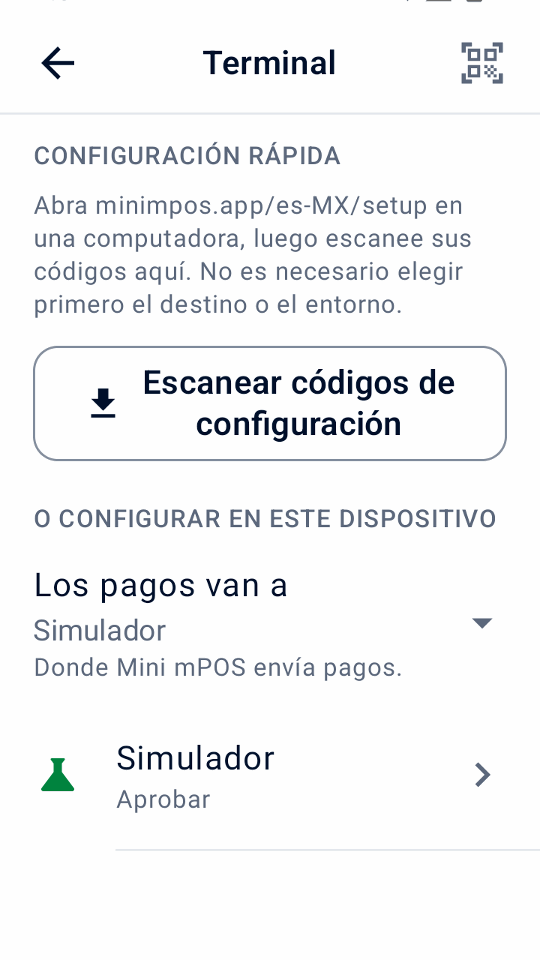

Guía
Inicio rápido
Instale Mini mPOS, conéctelo a Adyen y verifique su primer pago TEST. Siga solo los pasos para la configuración de su dispositivo.
¿Solo explorando? Prueba el simulador sin cuenta o terminal Adyen.
Verifique los requisitos previos
Verifique estos requisitos antes de instalar la aplicación. El dispositivo ejecuta Mini mPOS; el terminal de pago toma la tarjeta. Pueden ser el mismo dispositivo.
Elija una configuración de dispositivo
- En una terminal Adyen
- El pago completo en un solo dispositivo. Utilice un terminal de pago Adyen Android con Android 9 o posterior. Consulta los modelos actuales en el Guía de terminales Adyen Android.
- Tableta o teléfono con terminal de red
- Recomendado para mostrador. Una tableta o teléfono Android 9+ en la misma red local que un terminal Adyen. Mini mPOS no está instalado en ese terminal.
- Tableta o teléfono con terminal en la nube
- Para un dispositivo y terminal en diferentes redes. Ambos necesitan acceso a Internet; Los pagos llegan al terminal a través de Adyen.
- Tap to Pay en un teléfono
- Sin terminal separada. Utilice un teléfono con comunicación de campo cercano (NFC) y la aplicación Adyen Payments, activada por Soporte Adyen. Compruebe el Requisitos del teléfono Adyen y Países y métodos de pago admitidos por Adyen.
Compare las configuraciones
| Configuración | Conexión | Recibos | Límites de funciones |
|---|---|---|---|
| En una terminal Adyen | Internet; conexión local a la terminal | Impresora integrada o correo | Se pueden configurar pagos locales sin conexión; sin pantalla separada para el cliente. |
| Tableta o teléfono con terminal de red | Misma red por TCP 8443; internet | Impresora de la terminal, correo o compartir | Pantalla separada para el cliente; se pueden configurar pagos locales sin conexión. |
| Tableta o teléfono con terminal en la nube | Internet en ambos dispositivos | Impresora de la terminal, correo o compartir | Pantalla separada para el cliente; sin pagos sin conexión por la nube. |
| Tap to Pay en un teléfono | Internet; teléfono NFC compatible | Correo o compartir; sin impresora | Sin propinas en la terminal, pantalla del cliente, MOTO/MKE, pagos sin conexión ni conciliación de terminal. |
Las funciones dependen de la terminal, el método de pago y la configuración de Adyen. Pruebe los flujos que necesita. Comprueba las capacidades de Adyen.
- La impresión necesita un terminal con impresora incorporada. Si no hay ninguno, puede enviar los recibos por correo electrónico o compartirlos.
- Escanear códigos de barras, reembolsar códigos QR o códigos de configuración necesita una cámara.
Preparar la red
Pídale al administrador de red del sitio que permita lo siguiente:
- Internet
- HTTPS saliente en TCP 443 desde el dispositivo y terminal a
*.adyen.comy*.adyenpayments.com. Permitirlos por nombre de dominio, no dirección IP, porque las direcciones IP de Adyen cambian. - Red local (para terminales de red)
- La tableta o el teléfono deben alcanzar la dirección IP del terminal en TCP 8443. Conecte ambos a la misma red y asegúrese de que el aislamiento del cliente Wi-Fi (común en redes de invitados) no los separe.
- Recibos por correo electrónico (opcional)
- Acceso saliente a su servidor SMTP, generalmente TCP 587 (STARTTLS) o 465 (SSL/TLS).
Asigne a cada terminal de red una dirección IP fija con una reserva DHCP en su enrutador. Los datos móviles funcionan para la tableta o el teléfono en la nube y en configuraciones Tap to Pay, pero no con un terminal de red. Para conocer los requisitos propios del terminal, consulte la Guía de configuración de la red Adyen.
Preparar las credenciales de Adyen
Para validar con Adyen, necesita una cuenta de comerciante de prueba activa con pagos en persona habilitados y acceso al Área de Clientes. Comience con las credenciales TEST y un terminal TEST o Adyen Payments Test. Para LIVE, utilice la cuenta real, las credenciales y el terminal o la aplicación Adyen Payments correspondientes.
Para crear o editar credenciales, su usuario del Área de Clientes necesita Manage API credentials o Merchant admin. Estos son permisos de usuario, no roles para la clave API.
Habilite los métodos de pago POS que planea aceptar; sigue el Guía de configuración del método de pago Adyen. Mini mPOS utiliza los métodos configurados del terminal.
- En el Área de Clientes, vaya a Developers › API credentials. Cree una credencial para Mini mPOS y genere su clave API; ver el Guía de credenciales Adyen API.
- Para la clave API principal, habilite estos roles adicionales:
- Management API - Terminal actions read
- Management API - Terminal settings read and write
- Management API - Terminal settings Advanced read and write
- Cloud Device API role
- API tokenise payment details
- Para LIVE, tenga en cuenta la Prefijo de URL LIVE de Developers › API URLs.
- Para Tap to Pay, Mini mPOS crea automáticamente una credencial separada de alcance comercial con la Adyen Payments App role y una clave de cliente. El soporte de Adyen debe habilitar Tap to Pay y hacer que esta función sea asignable desde la credencial de su empresa.
- Si desea configurar el dispositivo manualmente:
- Tenga en cuenta el Cuenta de comerciante.
- Para un terminal Adyen, terminal de red o Tap to Pay, busque el Clave compartida (identificador, frase de contraseña y versión) en Devices › Device settings › Integrations › Terminal API › Encryption key. Los terminales en la nube no lo utilizan.
Verifique todos los requisitos de la credencial
Mantenga habilitados los roles predeterminados de pagos y Management API que aparecen abajo, además de los cinco roles adicionales indicados arriba. Una credencial existente puede haber perdido roles predeterminados. La credencial principal necesita los mismos roles en todas las configuraciones; solo la credencial separada de registro del teléfono necesita Adyen Payments App role.
- Merchant PAL webservice role
- Checkout webservice role
- Management API - API credentials read and write
- Management API - Payment methods read
- Management API - Stores read
- Management API - Accounts read
- Merchant Recurring role
importante
Mini mPOS no tiene servidor, por lo que las claves API se almacenan cifradas en el dispositivo. Cree credenciales solo para Mini mPOS con solo los roles API necesarios para su configuración. Configure un PIN de administrador y revoque las credenciales si se pierde un dispositivo. Ver el política de seguridad.
Nota
Mini mPOS es independiente; Adyen no lo fabrica, respalda ni respalda. Siga la documentación vinculada de Adyen para conocer los procedimientos de cuenta y plataforma.
Instalar la aplicación
Descarga el APK firmado minimpos-<version>.apk de la
versión más reciente.
- terminal adyen
- En el Área de Clientes, cargue el APK e impleméntelo en sus terminales; ver el Guía de implementación de la aplicación Adyen. Su usuario necesita permiso para cargar e implementar aplicaciones.
- Abra Mini mPOS en el terminal, seleccione Conéctate a Adyen y toque Continuar.
- Tableta o teléfono
- Abra APK en el dispositivo y permita la instalación desde su navegador o administrador de archivos cuando Android lo solicite.
- Abra Mini mPOS, seleccione Conéctate a Adyen y toque Continuar.
importante
Instale todas las actualizaciones desde la misma fuente de firma. Un terminal rechaza una actualización firmada con una clave diferente. Para crear y firmar el suyo propio, consulte la guía para contribuyentes.
Conéctate a Adyen
Conectando empareja Mini mPOS con su terminal o la aplicación Adyen Payments y verifica su clave Adyen API. Siga solo la parte de su configuración. Cada uno tiene dos opciones: la ayudante de configuración (recomendado), o entrada manual en Configuración › Terminal.


Escanear códigos de configuración desde una computadora
- En una computadora de confianza, abra el asistente de configuración. Genera códigos localmente; consulte la nota de alojamiento y privacidad.
- Elija dónde se ejecuta Mini mPOS y el entorno, TEST o LIVE.
- Elige Automático (recomendado) ingresar solo la clave API de Adyen; el dispositivo busca el resto. Elige manuales para ingresar todos los detalles de la conexión.
- Ingrese los detalles solicitados.
- Haga clic Hacer códigos QR. Mantén la página abierta: muestra el código de transferencia de 12 caracteres.
- En Mini mPOS, abra Configuración › Terminal y toque Escanear códigos de configuración o el icono QR en la parte superior derecha. Lea la guía, toque Ya tengo códigos y escanea cada código.
- Verifique el destino y el entorno, ingrese el código de transferencia y toque Verificar e importar.
- Si te lo piden, elige tu terminal. Para Tap to Pay, complete el registro cuando se abra la aplicación Adyen Payments. No se guarda nada hasta que pasen todas las comprobaciones.
Conectar un terminal Adyen
Requisitos previos
- Mini mPOS desplegado en la terminal
- un Clave API de Adyen del entorno de la terminal
- Acceso a Internet para la terminal.
- Asistente de configuración (recomendado)
- en el ayudante de configuración, elija En una terminal Adyen, el terminal TEST o LIVE entorno y Automático. Ingrese la clave API, luego escanea los códigos.
manuales
- en Configuración › Terminal › Adyen API, ingrese la clave API de Adyen y la cuenta comercial, más el prefijo de URL LIVE para LIVE. Toque Encuentra terminal para configurar para probar el acceso a API y completar la clave compartida automáticamente, o Prueba API para continuar manualmente.
- Verifique o ingrese la clave compartida y toque Probar conexión.
Emparejar un terminal en su red
Requisitos previos
- Mini mPOS instalado en la tableta o el teléfono
- un Clave API de Adyen del entorno de la terminal
- El dispositivo y el terminal del misma red, con TCP 8443 abierto entre ellos
- Asistente de configuración (recomendado)
- en el ayudante de configuración, elija En una tablet o teléfono, con un terminal en la misma red, el terminal TEST o LIVE entorno y Automático. Ingrese la clave API, luego escanea los códigos. Si encuentra más de un terminal, elige el tuyo.
manuales
- en Configuración › Terminal, establecer Los pagos van a a Un terminal en tu red. bajo Entorno, elija TEST o LIVE para que coincida con el terminal.
- bajo Adyen API, ingrese la clave API de Adyen y la cuenta comercial, más el prefijo de URL LIVE para LIVE. Toque Encuentra terminal para configurar para probar el acceso al API y elegir el terminal. Ingrese los detalles que faltan manualmente.
- Verifique o ingrese la dirección IP del terminal y ID de terminal (POIID). Ambos están en la pantalla de información del dispositivo del terminal.
- Verifique o ingrese la clave compartida y toque Probar conexión.
Conectar un terminal en la nube
Requisitos previos
- Mini mPOS instalado en la tableta o el teléfono
- un Clave API de Adyen del entorno de la terminal
- Acceso a Internet para el dispositivo y el terminal
- Asistente de configuración (recomendado)
- en el ayudante de configuración, elija En una tableta o teléfono, con un terminal a través de internet (nube), el terminal TEST o LIVE entorno y Automático. Ingrese la clave API, luego escanea los códigos . Si encuentra más de un terminal, elige el tuyo.
manuales
- en Configuración › Terminal, establecer Los pagos van a a Un terminal a través de internet (nube). bajo Entorno, elija TEST o LIVE para que coincida con el terminal.
- bajo Adyen API, ingrese la clave API de Adyen y la cuenta comercial, más el prefijo de URL LIVE para LIVE. Toque Encuentra terminal para configurar para probar el acceso al API y elegir el terminal. Ingrese los detalles que faltan manualmente.
- Consulta o introduce el ID de terminal (POIID) y toque Probar conexión.
Configurar Tap to Pay
Requisitos previos
- Tap to Pay y el Adyen Payments App role habilitado para tu empresa por Adyen; póngase en contacto con el soporte de Adyen
- Mini mPOS instalado en un teléfono compatible
- un Clave API de Adyen y la clave compartida
- Desde Google Play, instalar Adyen Payments Test para TEST o Adyen Payments para LIVE. Ambos pueden permanecer instalados.
- En Mini mPOS, abra Configuración › Terminal y seleccione Tap to Pay en este teléfono. Elige TEST o LIVE bajo Entorno; Mini mPOS abre solo la aplicación de ese entorno.
- Asistente de configuración (recomendado)
- en el ayudante de configuración, elija En un teléfono, con Tap to Pay en la aplicación Adyen Payments y TEST o LIVE. Ingrese la clave API de Adyen correspondiente, la cuenta de comerciante y la clave compartida y, opcionalmente, una ID de tienda. escanea los códigos y toque Verificar e importar. Mini mPOS crea la credencial de registro y abre la aplicación Adyen Payments para completar el registro como parte de la importación.
manuales
- en Configuración › Terminal › Adyen API, ingrese la clave API de Adyen y la cuenta comercial. Para pagos en vivo, ingrese también el prefijo en vivo URL. Toque Prueba API .
- bajo Tap to Pay, opcionalmente toque Elige tienda o ingrese una ID de tienda. No se necesita ninguna clave API separada.
- Toque Configurar Tap to Pay y completar el registro en la aplicación Adyen Payments.
- En Mini mPOS, ingrese la clave compartida.
La aplicación Adyen Payments no puede ejecutar una prueba de conexión, así que confirme la configuración con un Pago TEST. Para cancelar el registro del teléfono más tarde, utilice Quitar este teléfono.
Crear una clave de cifrado faltante
Si un terminal físico aún no tiene una clave de cifrado, la configuración ofrece Crear clave de cifrado después de pasar las verificaciones de credenciales y cuentas.
- Verifique la ID del terminal y el entorno que se muestran y luego confirme. No cambie la configuración de este terminal en ningún otro lugar mientras se crea la clave.
- Si la conexión aún no está verificada, actualice la configuración del terminal; ver recuperación de configuración de clave.
- Si se interrumpe la creación, toque Reanudar configuración de la clave. Para la configuración de QR, escanee los mismos códigos nuevamente con su código de transferencia.
Valide su configuración TEST
- en Configuración › Terminal, comprobar que el entorno es TEST.
Completa la final Probar conexión paso para verificar el acceso a API y las
comprobaciones de conexión admitidas.
- Terminal físico: ejecutar Probar conexión y comprobar que pasa.
- Tap to Pay: confirma que el teléfono está registrado en Adyen Payments Test. La verificación de la conexión valida únicamente la configuración: no hay diagnóstico de terminal. Utilice el pago de prueba a continuación para verificar el comportamiento de pago.
- en Configuración › Pagos, comprobar la moneda. en Configuración › Impuesto, consultar las tarifas y si los precios incluyen impuestos.
- En Inicio, toque Nueva venta, agregue un Artículo personalizado y toque Cobrar.
- Toque pagar y sigue el Guía de pruebas de Adyen POS para un pago exitoso.
- Verifique que el resultado esté aprobado y que el recibo tenga el monto, moneda e impuestos correctos. Abrir la venta en Historial. Coincidir con su Referencia de PSP al pago en el TEST Área de Clientes.
- Reembolsar el pago y verifique el resultado final del reembolso en el TEST Área de Clientes. Reembolso solicitado No es una confirmación final.
- Repetir la venta con un escenario de pago rechazado por parte del Guía de pruebas de Adyen POS. Verifique que Mini mPOS muestre un rechazo, no una aprobación; ver pagos rechazados.
Advertencia
Si desconoce el resultado no vuelva a pagar. Sigue el pasos de recuperación primero.
A continuación, configure productos, recibos y acceso del personal en Usando Mini mPOS.
ir en vivo
Advertencia
Al cambiar entre TEST, LIVE y el simulador se elimina todo el historial de pagos del dispositivo, incluidos los datos de recuperación de pagos no finalizados. Resolver cada pago bajo Necesita atención primero.
Antes de utilizar funciones opcionales del terminal, revise Capacidades de Adyen y prueba tu destino real: propinas en el terminal, pagos parciales, avisos al comprador, donaciones y ingreso manual de tarjeta, procesamiento fuera de línea y conciliación terminal. La disponibilidad depende de la configuración de Adyen y del destino del pago.
- En TEST, pruebe solo los flujos de trabajo opcionales que planea usar: depósitos , propinas de recibo, enlaces de pago o carteras escaneadas. Los depósitos y las propinas de recibo retienen los fondos hasta su captura. Verifique los resultados finales de la captura en el Área de Clientes.
- Pruebe los métodos de entrega de recibos que planea utilizar: imprima en una impresora real, envíe un correo electrónico de prueba o comparta un recibo.
- Establezca un PIN de administrador y, si es necesario, un PIN de administrador; ver acceso del personal.
- Cambie al terminal LIVE o a la aplicación Adyen Payments LIVE, con las credenciales LIVE. Para un terminal de red/nube o Tap to Pay, elija LIVE bajo Entorno. Introduzca el Prefijo de URL LIVE; ver el Guía de puntos finales activos de Adyen. Tap to Pay necesita registrarse nuevamente en el entorno seleccionado.
- en Configuración › Terminal, comprobar que el entorno es LIVE.
Completa la final Probar conexión paso para verificar el acceso a API y las
comprobaciones de conexión admitidas.
- Terminal físico: ejecutar Probar conexión y comprobar que pasa.
- Tap to Pay: confirma que el teléfono está registrado en el LIVE Adyen Payments aplicación. La verificación de la conexión valida únicamente la configuración: no hay diagnóstico de terminal.
Para verificaciones y conciliaciones diarias, consulte cerrar el dia.
Prueba el simulador
Explore Mini mPOS sin una cuenta ni terminal de Adyen. No se cobra ninguna tarjeta.
- Instale la aplicación en un teléfono o emulador Android 9+.
- En la pantalla de bienvenida, seleccione Pruebe una demostración en lugar de Escanear códigos de configuración o Conéctate a Adyen, y toque Continuar.
- En Configuración › Simulador, elija el resultado del pago, el retraso y si hay impresora. Active Aprobaciones sin conexión para ver las advertencias sin conexión en el historial y en la conciliación del terminal.
En Configuración › Datos y transferencia, use Agregar datos de muestra o Eliminar datos de muestra. Las muestras se etiquetan como demostraciones y cuentan en los totales e informes del día de demostración; agregarlas reemplaza los datos del negocio del recibo por una cafetería ficticia y agrega su logotipo si no hay uno. Eliminarlas conserva sus propios productos, historial, configuración y logotipo.
Los enlaces de pago funcionan sin conexión y sin credenciales de API, y sus pantallas y recibos se etiquetan como demostraciones. Sus códigos QR no pueden recibir pagos; toque Simular pago para completar uno.
El simulador muestra cómo se comporta Mini mPOS, no lo que admiten su terminal o su cuenta de Adyen. Funciones como la guía por audio, las aprobaciones sin conexión y las capacidades de Adyen se imitan, así que pruébelas en un terminal TEST real antes de depender de ellas.
¿Listo para conectarse? En Configuración › Simulador, toque Configurar pagos reales y luego Continuar con la configuración. Confirmar TEST o LIVE elimina todo el historial local; los productos de muestra y los datos del recibo se conservan, así que elimine las muestras y revise los datos del negocio antes de cobrar de verdad. Comience con TEST.